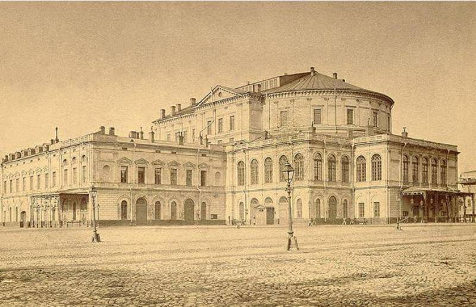

За более чем два столетия своей истории Мариинский театр подарил миру
многих великих артистов: здесь служил выдающийся бас, основоположник
российской исполнительской оперной школы Осип Петров, оттачивали свое
мастерство и достигли вершин славы такие великие певцы, как Федор
Шаляпин, Иван Ершов, Медея и Николай Фигнер, Софья Преображенская.
Блистали на сцене артисты балета: Матильда Кшесинская, Анна Павлова,
Вацлав Нижинский, Галина Уланова, Рудольф Нуреев, Михаил Барышников.
Начинал свой путь в искусство Джордж Баланчин. Театр был свидетелем
расцвета таланта гениальных художников-декораторов, таких как Константин
Коровин, Александр Головин, Александр Бенуа, Симон Вирсаладзе, Федор
Федоровский. И многие, многие другие.
Издавна так повелось, что Мариинский театр ведет родословную,
отсчитывает век от 1783 года, когда 12 июля был издан Указ об
утверждении театрального комитета «для управления зрелищами и музыкой»,
а 5 октября – торжественно открыт Большой Каменный театр на Карусельной
площади. Театр дал новое имя площади – она дошла до наших дней как
Театральная.
Построенный по проекту Антонио Ринальди Большой театр поражал
воображение размерами, величественной архитектурой, сценой,
оборудованной по последнему слову тогдашней театральной техники. При его
открытии давалась опера Джованни Паизиелло Il Mondo della luna («Лунный
мир»). Русская труппа выступала здесь попеременно с итальянской и
французской, шли драматические спектакли, устраивались также
вокально-инструментальные концерты.
Большой (Каменный) театр на Карусельной площади, архитектор Антонио
Ринальди
Петербург строился, его облик непрерывно менялся. В 1802-1803 годах Тома
де Томон – блестящий архитектор и рисовальщик – осуществил капитальное
переустройство внутренней планировки и отделки театра, заметно изменил
его внешний вид и пропорции. Новый, приобретший парадный и праздничный
вид, Большой театр сделался одной из архитектурных
достопримечательностей невской столицы, наряду с Адмиралтейством,
Биржей, Казанским собором. Однако в ночь на 1 января 1811 года в Большом
театре разразился грандиозный пожар. За два дня в огне погибло богатое
внутреннее убранство театра, серьезно пострадал и его фасад. Тома де
Томон, составивший проект восстановления своего любимого детища, не
дожил до его реализации. 3 февраля 1818 года возобновленный Большой
театр открылся вновь прологом «Аполлон и Паллада на Севере» и балетом
Шарля Дидло «Зефир и Флора» на музыку композитора Катарино Кавоса.
Мы приближаемся к «золотому веку» Большого театра. Репертуар
«послепожарной» эпохи включает «Волшебную флейту», «Похищение из
сераля», «Милосердие Тита» Моцарта. Русскую публику пленяют «Золушка»,
«Семирамида», «Сорока-воровка», «Севильский цирюльник» Россини. В мае
1824 года состоялась премьера «Вольного стрелка» Вебера – произведения,
так много значившего для зарождения русской романтической оперы.
Играются водевили Алябьева и Верстовского; одной из самых любимых и
репертуарных опер делается «Иван Сусанин» Кавоса, шедший вплоть до
появления оперы Глинки на тот же сюжет. С легендарной фигурой Шарля
Дидло связано зарождение мировой славы русского балета. Именно в эти
годы завсегдатаем петербургского Большого был Пушкин, запечатлевший
театр в бессмертных стихах.
В 1836 году с целью улучшения акустики архитектором Альберто Кавосом –
сыном композитора и капельмейстера – купольное перекрытие театрального
зала заменяется плоским, а над ним размещается художественная
мастерская, зал для расписывания декораций. Альберто Кавос убирает в
зрительном зале колонны, которые затрудняли обзор и искажали акустику,
придает залу привычную форму подковы, увеличивает его длину и высоту,
доведя число зрителей до двух тысяч.
27 ноября 1836 года первым представлением оперы Глинки «Жизнь за царя»
возобновились спектакли перестроенного театра. Волею случая, а может
быть не без доброго умысла, премьера «Руслана и Людмилы» – второй оперы
Глинки – состоялась ровно через шесть лет, 27 ноября 1842 года. Двух
этих дат было бы довольно, чтобы петербургский Большой театр навсегда
вошел в историю русской культуры. А ведь шли, разумеется, и шедевры
европейской музыки: оперы Моцарта, Россини, Беллини, Доницетти, Верди,
Мейербера, Гуно, Обера, Тома...
Со временем спектакли русской оперной труппы были перенесены на сцену
Александринского театра и так называемого Театра-цирка, расположенного
напротив Большого (где продолжались выступления балетной труппы, а также
итальянской оперы).
Когда же в 1859 году Театр-цирк сгорел, на его месте все тем же
архитектором Альберто Кавосом был построен новый театр. Он-то и получил
имя Мариинского в честь царствующей императрицы Марии Александровны,
супруги Александра II. Первый же театральный сезон в новом здании
открылся 2 октября 1860 года «Жизнью за царя» Глинки под управлением
главного капельмейстера Русской оперы Константина Лядова, отца будущего
знаменитого композитора Анатолия Лядова.
Театр-цирк, на месте которого после пожара был построен Мариинский
театр
Мариинский театр упрочил и развил великие традиции первой русской
музыкальной сцены. С приходом в 1863 году Эдуарда Направника, сменившего
Константина Лядова на посту главного капельмейстера, началась славнейшая
эпоха в истории театра. Полвека, отданные Направником Мариинскому
театру, отмечены премьерами самых значительных в истории русской музыки
опер. Назовем лишь некоторые из них – «Борис Годунов» Мусоргского,
«Псковитянка», «Майская ночь», «Снегурочка» Римского-Корсакова, «Князь
Игорь» Бородина, «Орлеанская дева», «Чародейка», «Пиковая дама»,
«Иоланта» Чайковского, «Демон» Рубинштейна, «Орестея» Танеева… В начале
ХХ века в репертуаре театра оперы Вагнера (среди них тетралогия «Кольцо
нибелунга»), «Электра» Рихарда Штрауса, «Сказание о невидимом граде
Китеже» Римского-Корсакова, «Хованщина» Мусоргского…
Возглавивший балетную труппу театра в 1869 году Мариус Петипа продолжил
традиции своих предшественников Жюля Перро и Артюра Сен-Леона. Петипа
ревностно сохранял такие классические спектакли, как «Жизель»,
«Эсмеральда», «Корсар», подвергая их лишь бережной редакции.
Поставленная им «Баядерка» впервые принесла на балетную сцену дыхание
крупной хореографической композиции, в которой «танец уподобился
музыке». Счастливая встреча Петипа с Чайковским, утверждавшим, что
«балет – та же симфония», привела к рождению «Спящей красавицы» –
подлинной музыкально-хореографической поэмы. В содружестве Петипа и Льва
Иванова возникла хореография «Щелкунчика». Уже после смерти Чайковского
«Лебединое озеро» обрело вторую жизнь на сцене Мариинского театра – и
вновь в совместной хореографии Петипа и Иванова. Свою репутацию
хореографа-симфониста Петипа упрочил постановкой балета Глазунова
«Раймонда». Его новаторские идеи были подхвачены молодым Михаилом
Фокиным, поставившим в Мариинском театре «Павильон Армиды» Черепнина,
«Лебедя» Сен-Санса, «Шопениану» на музыку Шопена, а также балеты,
созданные в Париже – «Шехеразаду» на музыку Римского-Корсакова,
«Жар-птицу» и «Петрушку» Стравинского.

Мариинский театр до реконструкции 1885 года, архитектор Альберто Кавос
Мариинский театр неоднократно реконструировался. В 1885 году, когда
перед закрытием Большого театра на сцену Мариинского переносится большая
часть спектаклей, главный архитектор императорских театров Виктор Шретер
пристраивает к левому крылу здания трехэтажный корпус для театральных
мастерских, репетиционных залов, электростанции и котельной. В 1894 году
под руководством Шретера деревянные стропила были заменены стальными и
железобетонными, надстроены боковые флигели, расширены зрительские фойе.
Подвергся реконструкции и главный фасад, обретший монументальные формы.
Мариинский театр после реконструкции 1885 года архитекторлм Виктором
Шретером
В 1886 году балетные спектакли, до этого времени продолжавшие идти на
сцене Большого Каменного театра, были перенесены в Мариинский театр. А
на месте Большого Каменного возвели здание Санкт-Петербургской
консерватории.
Правительственным декретом 9 ноября 1917 года Мариинский театр был
объявлен Государственным и передан в ведение Наркомпроса. В 1920 году
его стали именовать Государственным академическим театром оперы и балета
(ГАТОБ), а с 1935 года ему было присвоено имя С. М. Кирова. Наряду с
классикой прошлого века на сцене театра в 20-е – начале 30-х годов
появляются современные оперы – «Любовь к трем апельсинам» Сергея
Прокофьева, «Воццек» Альбана Берга, «Саломея» и «Кавалер розы» Рихарда
Штрауса; рождаются балеты, утверждающие популярное в течение десятилетий
новое хореографическое направление, так называемый драмбалет – «Красный
мак» Рейнгольда Глиэра, «Пламя Парижа» и «Бахчисарайский фонтан» Бориса
Асафьева, «Лауренсия» Александра Крейна, «Ромео и Джульетта» Сергея
Прокофьева и др.
Последней предвоенной оперной премьерой Кировского театра был
вагнеровский «Лоэнгрин», второй спектакль которого закончился поздним
вечером 21 июня 1941 года, но назначенные на 24 и 27 июня спектакли
заменили на «Ивана Сусанина». Во время Великой Отечественной войны театр
был эвакуирован в Пермь, где состоялись премьеры нескольких спектаклей,
в том числе премьера балета Арама Хачатуряна «Гаянэ». По возвращении в
Ленинград театр открыл сезон 1 сентября 1944 года оперой Глинки «Иван
Сусанин».
Здание Мариинского (в то время Кировского) театра разрушенное бомбой
19 сентября 1941 года
В 50-70-е гг. в театре были поставлены такие знаменитые балеты, как
«Шурале» Фарида Яруллина, «Спартак» Арама Хачатуряна и «Двенадцать»
Бориса Тищенко в хореографии Леонида Якобсона, «Каменный цветок» Сергея
Прокофьева и «Легенда о любви» Арифа Меликова в хореографии Юрия
Григоровича, «Ленинградская симфония» Дмитрия Шостаковича в хореографии
Игоря Бельского, одновременно с постановкой новых балетов в репертуаре
театра бережно сохранялась балетная классика. В оперном репертуаре
наряду с Чайковским, Римским-Корсаковым, Мусоргским, Верди, Бизе
появились оперы Прокофьева, Дзержинского, Шапорина, Хренникова.
В 1968–1970 гг. была осуществлена генеральная реконструкция театра по
проекту Саломеи Гельфер, в результате которой левое крыло здания было
«вытянуто» и приобрело нынешний вид.
Важным этапом в истории театра в 80-е годы стали постановки опер
Чайковского «Евгений Онегин» и «Пиковая дама», осуществленные
возглавившим театр в 1976 году Юрием Темиркановым. В этих постановках,
которые до сих пор сохраняются в репертуаре театра, заявило о себе новое
поколение артистов.
В 1988 году главным дирижером театра стал Валерий Гергиев. 16 января
1992 года театру было возвращено его историческое название – Мариинский.
А в 2006 году труппа и оркестр театра получили в своё распоряжение
построенный по инициативе художественного руководителя-директора
Мариинского театра Валерия Гергиева Концертный зал на улице Писарева,
20.